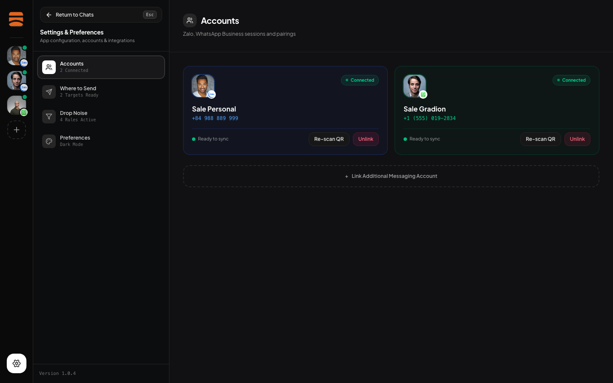
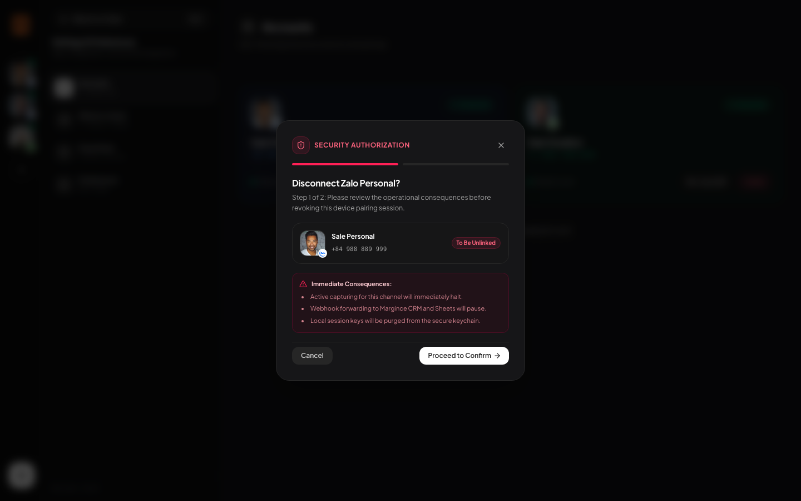
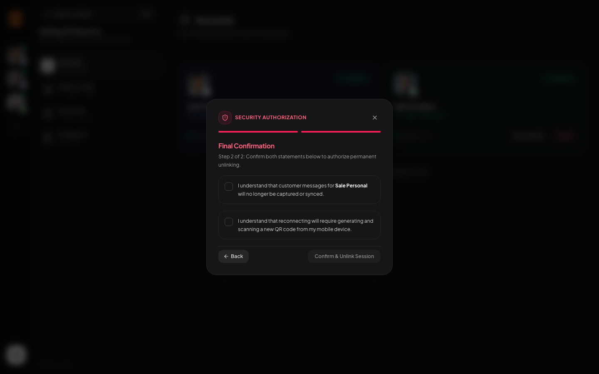
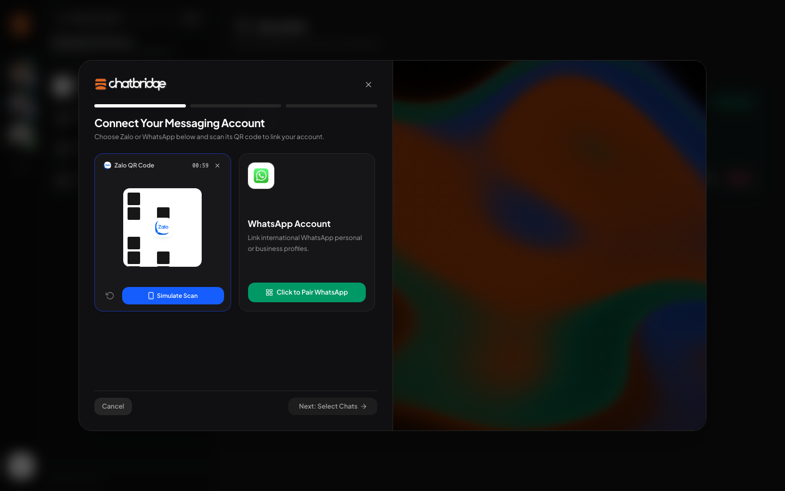
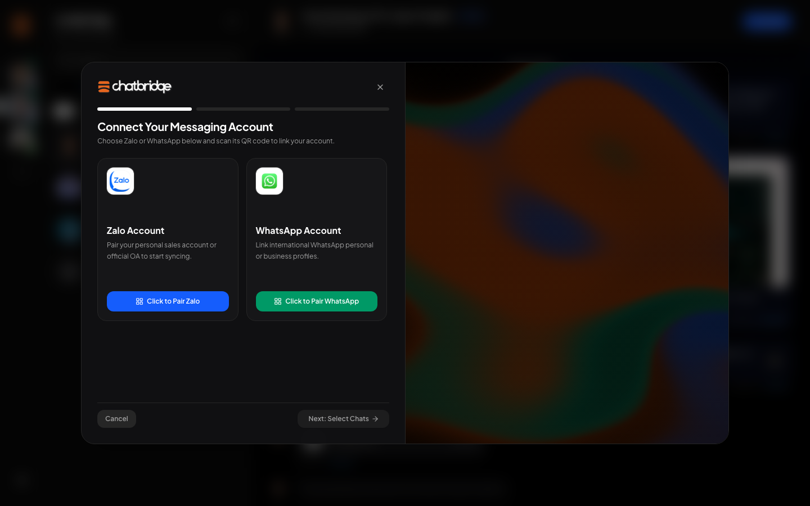
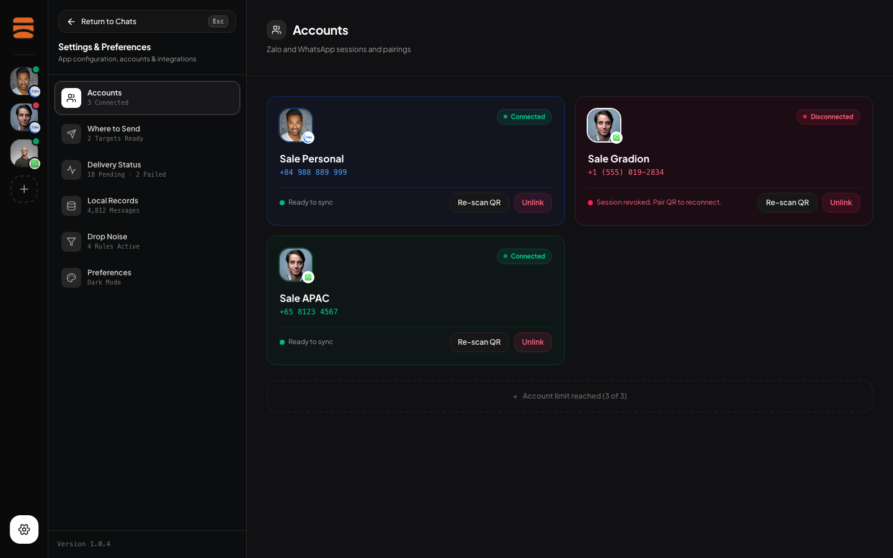
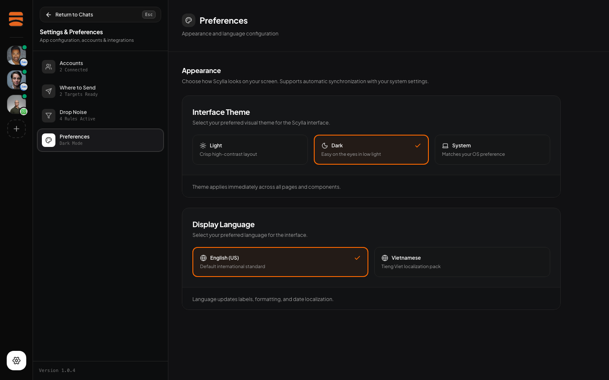
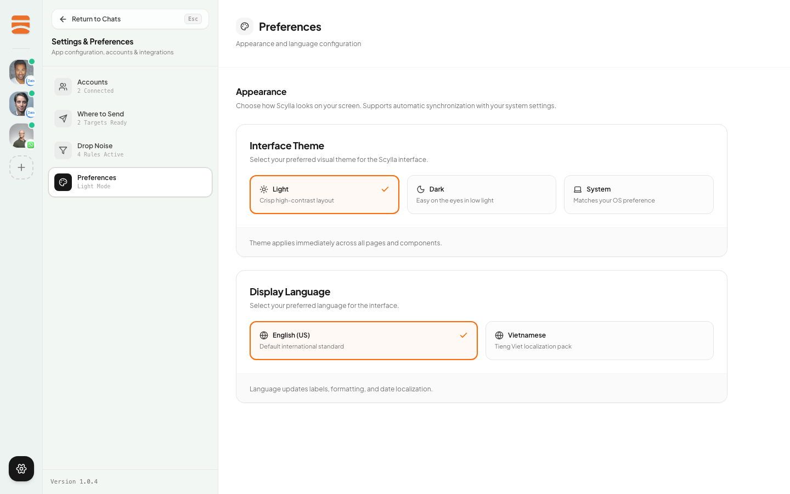
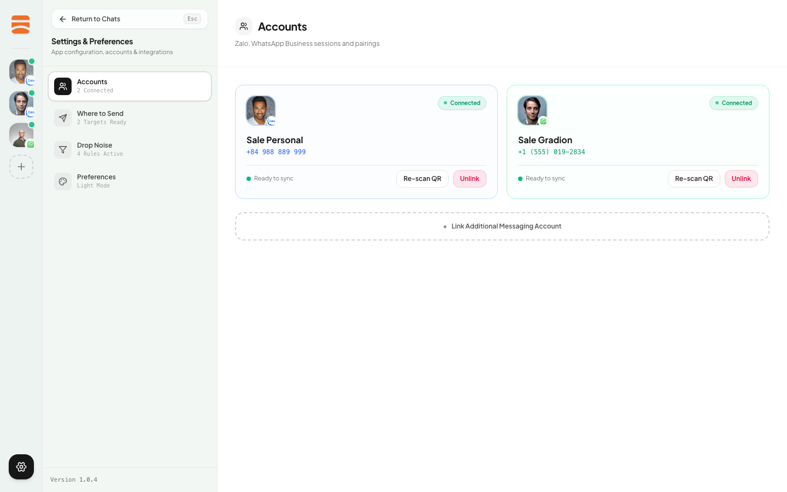

Prototype, sample data · Settings: accounts and theme · screens: settings-accounts, account-unlink-1, account-unlink-2, account-rescan, account-add, accounts-limit-revoked, prefs-dark, prefs-light, accounts-light
Accounts (theirs)

Unlink, step 1 (theirs)

Unlink, step 2 (theirs)

Re-scan QR (theirs)

Add an account (theirs)

Three accounts, one session revoked (added)

Preferences, dark (theirs)

Preferences, light (theirs)

Accounts, light (theirs)
